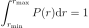
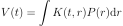

Basics¶
DeerLab relies on a few central quantities. They include distance distributions and model functions, background and their model functions, time-domain signals, and kernels. They are described in this section.
All functions in DeerLab use the same units: all distances are in units of nanometers, and all times in units of microseconds.
Distance distributions¶
A distance distribution  between two spins is represented by a pair of vectors: a distance vector
between two spins is represented by a pair of vectors: a distance vector r (in nanometers) and a vector of densities P (in inverse nanometers). The distance vector r can have linearly or non-linearly increasing values, but must have positive values. The elements P[i] are the distance distribution values at r[i] and are posiive or zero. Outside of the range defined by r, the distribution P is assumed to be zero, i.e. the distribution is truncated to the range r. The distance distribution P is normalized such that the integral over the range of the provided r equals one:

DeerLab distinguishes between non-parametric and parametric distance distributions.
- Non-parametric distance distributions
- These provide the more general definition of distance distributions. They have no particular shape and are represented by the vectors
Pandr. For example, you can generatePandrby an external program for spin label rotamer modeling.- Parametric distance distributions
These have specific shapes that are determined by a few parameters. DeerLab provides many parametric distance distribution model functions. All these functions start with the prefix
dd_(ddstands for “distance distribution”). They take a distance vectorrand a parameter vectorparamas inputs and return the distance distribution as a vectorP. Here is an example:r = np.linspace(1.5,6,200) # distance vector, in nm rmean = 3 # nm, mean of Gaussian sigma = 0.2 # nm, standard deviation of Gaussian P = dl.dd_gauss(r,[rmean, sigma]) # Gaussian distribution plt.plot(r,P)To programmatically get information on a particular distance distribution model functions and its parameters, call the function without input arguments
info = dl.dd_gauss() # obtain information on model and parametersThis returns a dictionary
infocontaining model parameter names and other quantities such as their built-in lower and upper boundaries.
In least-squares fitting, non-parametric distance distributions make fewer assumptions about the distribution than parametric distance distributions. They are more flexible and introduce less bias.
Dipolar background¶
In DeerLab, all inter-molecular contributions to the dipolar modulation (i.e. the echo modulation function due to randomly distributed spins in the sample that are not part of the spin-labeled protein or object) are referred to as the dipolar background. DeerLab has a range of parametric models for the background. All these background model functions start with the prefix bg_. They take the time axis vector t (in microseconds) and a parameter vector param as inputs. The output is a background vector B defined over t. To get information on the model and its parameters, call the function without inputs:
info = dl.bg_hom3d() # obtain information on model and parameters
DeerLab’s background models fall into two categories, physical and phenomenological:
- Physical background models
Describe particular distributions of spin labels in space and depend on physical parameters such as spin concentration, exclusion distances, and fractal dimensionality. The most common background model is bg_hom3d, which describes the signal due to a homogeneous three-dimensional distribution of spins of a given concentration. A background due to a homogeneous distribution of spins in fractal dimensions is available with bg_homfractal, and excluded-volume effects can be accounted for using bg_hom3dex to model the background.
In addition to
tand the model parametersparamphysical background model functions take the dipolar pathway amplitudelambdaas a third input, for examplet = np.linspace(-0.1,4,200) # time, in microseconds lam = 0.4 # modulation depth conc = 70 # spin concentration, in µM B = dl.bg_hom3d(t,conc,lam) # homogeneous 3D background plt.plot(t,B)- Phenomenological background models
Represent various mathematical functions that are intended to mimic the background decay, without reference to a particular spatial distribution of spins. The parameters of these models do no have a direct physical meaning. Some examples include bg_exp, which models the background decay as a simple exponential function, or bg_strexp which model the background decay as a stretched exponential function.
Phenomenological background model functions just take
tand the model parametersparamas input, for examplet = np.linspace(-0.1,4,200) # time, in microseconds kappa = 0.35 # decay rate, in inverse microseconds B = dl.bg_exp(t,kappa) # exponential background plt.plot(t,B)
In general, it is preferable to use physical instead of phenomenological models.
Experiments¶
DeerLab supports a wide range of dipolar EPR experiments (4-pulse DEER, 4-pulse DEER, RIDME, etc). Experiments differ in the number and nature of their modulated dipolar pathways. Each of these pathways leads to a dipolar modulation contribution to the total dipolar signal, with specific amplitude and refocusing times. The overall dipolar signal is the sum of an unmodulated contribution and a contribution from all modulated pathways, each of which with its own amplitude, refocusing time, and harmonic. For each supported experiment, there is a dedicated experiment :ref:` model function<modelsref_ex>` starting with ex_, which encode the dipolar pathways for that specific experiment. These functions take an array of parameters characterizing the experiment. As output, they return an array containing information about the dipolar pathways of the experiment model.
For example, the model function representing the most common model for a 4-pulse DEER signal is ex_4pdeer:
t = np.linspace(0,3,151) # time axis, in microseconds
lam = 0.3; # modulation depth (amplitude of dipolar modulation)
pathways = dl.ex_4pdeer(t,lam) # list of pathway information
The returned output pathways is a list of pathway information
pathways = [[0.7], [0.3, 0]]
Each entry in this list holds information about one pathway. In each entry, the first element is the modulation amplitude, and the second element is the refocusing time. In the above example, the first pathway has amplitude 0.7 and no refocusing time, indicating that it represents the unmodulated contribution. The second pathway has amplitude 0.3 and refocusing time 0, i.e. this is the primary modulated dipolar pathway.
Dipolar kernels¶
One of the core functions of DeerLab is dipolarkernel. It constructs the kernel that provides the connection between the distance distribution and the time-domain dipolar signal via

The simplest dipolar kernel just requires the time-vector t and distance-vector r
t = np.linspace(0,6,300) # time axis, in µs
r = np.linspace(2,7,300) # distance axis, in nm
K0 = dl.dipolarkernel(t,r) # dipolar kernel matrix
K0 is the kernel matrix. It assumes no orientation selection and absence of exchange couplings. To calculate the dipolar signal corresponding to a distance distribution P according to the equation above, use
V = K0@P # calculate signal from distribution
The above K0 is the most elementary kernel, giving a single dipolar evolution function centered at time zero, with modulation depth 1, and without any background decay. The kernel can also account for the background and the dipolar pathways. Then, operation V=K@P will return the complete time-domain dipolar signal. Here is an example for a 4-pulse DEER signal
lam = 0.4 # modulation depth
B = dl.bg_hom3d(t,200,lam) # background (inter-molecular modulation function)
K = dl.dipolarkernel(t,r,mod=lam,bg=B) # kernel matrix, including lam and B
V = K@P # calculate signal from distribution
plt.plot(t,V) # plotting
For experiments with more than one modulated dipolar pathway (such as 5-pulse DEER), modulation amplitudes and refocusing times for each pathway must be provided to dipolarkernel. Additionally, the background must be provided as a callable function that takes only time and modulation amplitude and encapsulates all other parameters. For example, for a 5-pulse DEER signal
Lam0 = 0.5 # amplitude of unmodulated component
lam1 = 0.4 # amplitude of primary modulated pathway
lam2 = 0.1 # amplitude of secondary modulated pathway
T02 = 3.1 # refocusing time of secondary pathway, in µs
pathways = dl.ex_5pdeer([Lam0,lam1,lam2,T02]) # dipolar pathways of 5-pulse DEER experiment
Bfcn = lambda t,lam: dl.bg_hom3d(t,200,lam) # function for background
K = dl.dipolarkernel(t,r,pathways=pathways,bg=Bfcn) # 5-pulse DEER dipolar kernel
The function dipolarkernel also has options to set the excitation bandwidth, to select the internal calculation method, and more.
Dipolar signals¶
Dipolar signals are the results of the many different dipolar EPR spectroscopy experiments. They represent the data from which distance distributions can be infered. DeerLab provides the tools for simulating dipolar signals originating from different experiments.
To generate complete time-domain signals from a distance distribution and a background decay, use the function dipolarkernel (described above) and apply it to the distance distribution:
K = dl.dipolarkernel(t,r,mod=lam,bg=B) # generate dipolar kernel
V = K@P # generate dipolar signal
plt.plot(t,V)
It is possible to add noise to simulated data by using the whitegaussnoise function:
sigma = 0.05 # noise level
V = K@P + dl.whitegaussnoise(t,sigma) # add some noise
With this, uncorrelated Gaussian noise with standard deviation sigma is added to the noise-free signal.
Adding a phase rotation is also possible, yielding a complex-valued signal with non-zero imaginary component. The phase shift on the noise has to be taken into account too:
phase = np.pi/4 # phase shift, radians
V = K@P*exp(-1j*phase) # add a phase shift
rnoise = dl.whitegaussnoise(t,sigma) # noise of real component noise
inoise = dl.whitegaussnoise(t,sigma) # noise of imaginary component
V = V + rnoise + inoise # complex-valued noisy signal